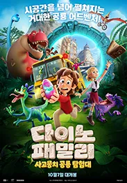
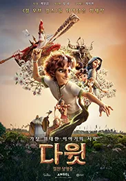

10월 3주차 극장가는 일본 애니메이션 〈극장판 치이카와: 인어 섬의 비밀〉이 개봉 3주 차에 역주행으로 차트 정상에 오른 가운데, 3주 연속 1위를 지키던 〈암살자(들)〉의 독주가 멈추며 상위권 순위 변동이 일어난 한 주였다.
1위는 한 계단 상승해 정상에 오른 일본 애니메이션 영화 〈극장판 치이카와: 인어 섬의 비밀〉이다. 보수 100배의 달콤한 유혹에 빠져 미지의 섬으로 떠난 치이카와 일행이 그곳에 숨겨진 비밀을 파헤치는 수상한 토벌 미션을 그렸다. 이번 주 55만 명의 관객, 55억 원의 매출을 기록했으며, 누적 관객 수는 183만 명이다.
2위는 한국 정치 스릴러 영화 〈암살자(들)〉이다. 1974년 8월 15일, 대한민국을 충격에 빠뜨린 영부인 저격 사건의 의혹과 배후를 영화적 상상으로 추적하는 이야기다. 이번 주 26만 명의 관객을 모으며 25억 원의 매출을 올렸고, 누적 관객 수는 325만 명이다.
3위는 <타짜> 시리즈의 4편이자 마지막 영화인 〈타짜: 벨제붑의 노래〉다. 온라인 카지노 사업으로 세상을 다 가진 줄 알았던 남자 장태영(변요한)과 그의 모든 것을 빼앗은 같은 이름의 절친 박태영(노재원)이 글로벌 도박판에서 다시 만나 복수의 한 판을 벌이게 되는 내용이다. 이번 주 17만 명의 관객, 17억 원의 매출을 기록했으며, 누적 관객 수는 191만 명이다.
4위는 크리스토퍼 놀란 감독의 대작 〈오디세이〉다. 트로이 전쟁 영웅 오디세우스(맷 데이먼)가 고향 이타카로 돌아가는 길에 마주하는 신들과 괴물들의 방해와 험난한 여정을 그린 대서사 액션 블록버스터다. 이번 주 9만 명의 관객을 모아 13억 원의 매출을 기록했고, 누적 관객 수는 1,227만 명이다.
5위는 10월 14일 개봉한 〈웨일폴: 고래에 먹린 남자〉다. 무게 60톤의 거대한 향유고래에게 산 채로 먹힌 다이버가 공기가 바닥나기까지 남은 단 60분 안에 고래 뱃속을 탈출하기 위해 극한의 생존 사투를 펼치는 서바이벌 스릴러 영화다. 개봉 첫 주 6만 명의 관객, 6억 원의 매출을 기록했다.
10월 3주차 흥행 TOP10

극장판 치이카와: 인어 섬의 비밀
개봉일 2026-09-30
매출액 55억 원
관객수 55만 명
암살자(들)
개봉일 2026-09-23
매출액 25억 원
관객수 26만 명
타짜: 벨제붑의 노래
개봉일 2026-09-23
매출액 17억 원
관객수 17만 명

오디세이
개봉일 2026-08-05
매출액 13억 원
관객수 9만 명
웨일폴: 고래에 먹힌 남자
개봉일 2026-10-14
매출액 6억 원
관객수 6만 명
룩백
개봉일 026-10-08
매출액 4억 원
관객수 4만 명
전자오락수호대
개봉일 2026-10-14
매출액 4억 원
관객수 4만 명
스트리트 파이터
개봉일 2026-10-14
매출액 3억 원
관객수 3만 명
입에 대한 앙케트
개봉일 2026-10-07
매출액 3억 원
관객수 3만 명

부활남: 더 레드
개봉일 2026-09-30
매출액 2억 원
관객수 2만 명
10월 3주차 독립·예술영화 극장가는 일본, 프랑스, 한국 등 다양한 국적의 작품들이 순위권에 오른 가운데, 애니메이션과 공포, 드라마 등 다채로운 장르의 신작들이 대거 상위권에 진입하며 활기를 띤 한 주였다.
1위는 10월 8일 개봉해 차트 정상에 오른 일본영화 〈룩백〉으로, 잊지 못할 사계절을 함께 그리며 서로의 세상이 되어준 두 소녀의 애틋한 이야기를 그렸다. <어느 가족> 고레에다 히로카즈 감독이 후모토 타츠키의 만화를 원작으로 한 동명 애니메이션을 실사화했고, 개봉 첫 주 4만 3천 명의 관객, 4억 4천만 원의 매출을 기록했다. 누적 관객 수는 10만 5천 명이다.
2위는 10월 7일 개봉한 일본 공포 영화 〈입에 대한 앙케트〉로, <주온>의 시미즈 다카시 감독의 신작이다. 괴담 속 저주받은 나무를 찾아간 후 흔적도 없이 사라진 한 명, 그리고 남겨진 5명의 조각난 기억과 기괴한 증언을 통해 그날의 섬뜩한 진실을 마주하게 되는 내용이다. 개봉 첫 주 2만 7천 명의 관객, 2억 6천만 원의 매출을 올렸다. 누적 관객 수는 7만 7천 명이다.
3위는 10월 21일 한국영화 〈여전히 찬란하게〉다. 송일곤 감독의 신작이자 김혜자 주연으로, 인생에서 가장 빛났던 시절을 함께 보낸 두 소녀의 약속과 60년 만에 다시 마주하게 된 특별한 재회의 여정을 그렸다.
4위는 프랑스영화 〈이방인〉이다. 1938년 프랑스령 알제리를 배경으로, 청년 ‘뫼르소’에게 닥친 비극을 통해 인간 세계의 허무와 부조리를 탐구하는 타임리스 클래식으로, 알베르 카뮈의 소설 <이방인>을 프랑소와 오종 감독이 스크린에 옮겼다. 누적 관객 수는 2만 1천 명이다.
5위는 10월 14일 개봉한 일본 애니메이션 영화 〈파리스 그린이 밝는 날에〉다. 불꽃 공장 철거 전 마지막 여름, 4년 만에 재회한 세 친구가 환상의 불꽃 ‘슈하리’를 쏘아올리는 이틀 간의 여정을 담은 수채화 감성의 영화다.
10월 3주차 독립·예술영화 흥행 TOP10

룩백
개봉일 2026-10-08
매출액 444백만 원
관객수 43천 명

입에 대한 앙케트
개봉일 2026-10-07
매출액 258백만 원
관객수 27천 명
여전히 찬란하게
개봉일 2026-10-21
매출액 38백만 원
관객수 4천 명

이방인
개봉일 2026-09-30
매출액 35백만 원
관객수 4천 명
파리스 그린이 밝는 날에
개봉일 2026-10-14
매출액 27백만 원
관객수 4천 명

다이노 패밀리: 사고뭉치 공룡 탐험대
개봉일 2026-10-07
매출액 18백만 원
관객수 2천 명
퓨리어스
개봉일 2026-10-07
매출액 16백만 원
관객수 2천 명
침묵의 빛
개봉일 2026-10-14
매출액 13백만 원
관객수 1천 명
헤븐 노우즈 왓
개봉일 2026-10-14
매출액 12백만 원
관객수 1천 명

다윗
개봉일 2026-07-10
매출액 9백만 원
관객수 1천 명
2026년 10월 3주차 극장가는 관객 수와 매출액이 전주 대비 감소세를 이어갔다. 극장 전체 관객 수는 142만 명, 매출액은 146억 원으로, 전주(10월 2주차) 193만 명, 201억 원 대비 각각 51만 명, 55억 원 감소했다.
개봉 편수는 총 13편으로 전주(17편) 대비 4편 줄어든 가운데, 외국영화가 5주 만에 시장 주도권을 되찾았다. 외국영화는 총 9편이 상영되어 88만 명의 관객을 동원하고 93억 원의 매출을 올렸다. 이번 주 한국영화 관객 수와 비교하면 약 1.6배 많은 수치다. 전주(94만 명, 102억 원) 대비 관객 수와 매출액은 각각 6만 명, 9억 원 소폭 감소했으나, 외국영화 점유율(관객 수 기준)은 전주(48.9%) 대비 13.2%p 상승한 62.1%를 기록했다.
반면 한국영화는 기존 상영작들의 관객 감소로 점유율이 큰 폭으로 떨어졌다. 한국영화는 4편이 상영되어 54만 명의 관객을 모으며 53억 원의 매출을 올리는 데 그쳤다. 전주(98만 명, 99억 원) 대비 관객 수와 매출액이 각각 44만 명, 46억 원 줄어들면서, 한국영화 점유율은 전주(51.1%) 대비 13.2%p 하락한 37.9%를 나타냈다.
최근 4주간의 전체적인 추이를 살펴보면 극장가는 추석 연휴가 포함된 9월 4주차에 391만 명으로 정점을 찍은 뒤, 10월 1주차 318만 명, 10월 2주차 193만 명, 10월 3주차에는 142만 명까지 내려앉으며 가을 비수기 하향 안정화 흐름을 보였다.
점유율 측면에서는 4주 만에 전세가 역전되었다. 9월 4주차 73.1%까지 치솟았던 한국영화 점유율은 10월 1주차 60.5%, 10월 2주차 51.1%로 단계적인 감소세를 보이다 이번 주 37.9%까지 떨어졌고, 외국영화가 62.1%의 점유율을 기록하며 다시 우세를 점했다.
최근 4주간 극장 매출 및 한국영화 점유율 (2026년 10월 19일 조회 기준)
| 기간 | 전체 | 한국 | 외국 | ||||||||
|---|---|---|---|---|---|---|---|---|---|---|---|
| 개봉편수 | 매출액(억 원) | 관객수(만 명) | 개봉편수 | 매출액 | 관객수 | 점유율 | 개봉편수 | 매출액 | 관객수 | 점유율 | |
| 10월 3주차 | 13 | 146 | 142 | 4 | 53 | 54 | 37.9% | 9 | 93 | 88 | 62.1% |
| 10월 2주차 | 17 | 201 | 193 | 7 | 99 | 198 | 51.1% | 10 | 102 | 94 | 48.9% |
| 10월 1주차 | 35 | 330 | 318 | 9 | 191 | 192 | 60.5% | 26 | 140 | 126 | 39.5% |
| 9월 4주차 | 11 | 412 | 391 | 5 | 288 | 286 | 73.1% | 6 | 125 | 105 | 26.9% |